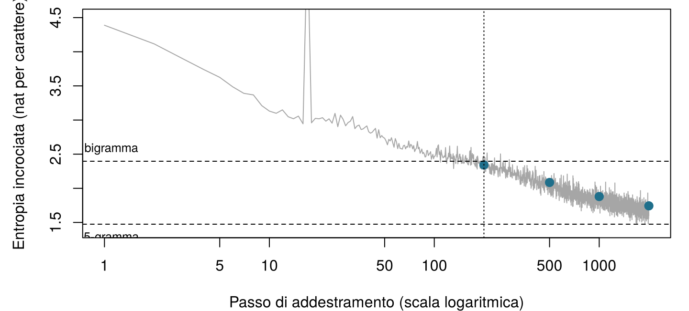
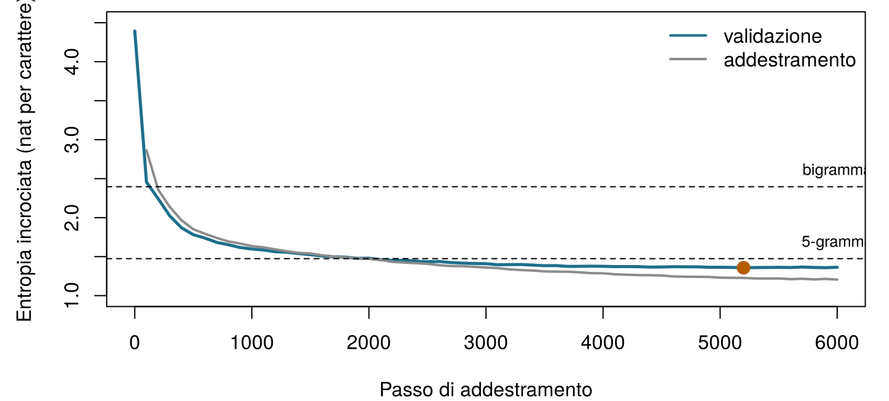

| Modello | Pesi | Blocchi N | Dimensione d | Contesto (token) | Vocabolario | Testo di addestramento |
|---|---|---|---|---|---|---|
| GPT del browser (questo capitolo, NumPy) | 107 200 | 2 | 64 | 32 | 79 | 217 501 caratteri |
| GPT più grande (questo capitolo, PyTorch) | 811 648 | 4 | 128 | 64 | 79 | 217 501 caratteri |
| GPT-2 small (Radford et al. 2019) | 117 milioni | 12 | 768 | 1 024 | 50 257 | circa 40 GB di testo web |
| GPT-3 (Brown et al. 2020) | 175 miliardi | 96 | 12 288 | 2 048 | 50 257 | 300 miliardi di token visti |
18 Addestra il tuo primo GPT
Un GPT è addestrato a fare una cosa sola: prevedere ciò che viene dopo. Il nostro modello prevederà il carattere successivo. Prima di qualsiasi codice, gioca tu: quale carattere viene dopo? (Il testo è quello inglese del libro.)
| Testo finora | Carattere successivo |
|---|---|
Notes on Nursin |
|
fresh ai ("aria fresca") |
|
the sick-roo ("la stanza del malato") |
|
Florence Nightingal |
Come usare questo capitolo
Inizi da qui?
Questo capitolo mette insieme le idee dei tre capitoli precedenti e del Capitolo 7. In poche righe:
- Il testo viene suddiviso in token presi da un vocabolario \(\mathcal{V}\); i token possono essere parole, pezzi di parole o singoli caratteri (Capitolo 15).
- Un modello linguistico assegna una probabilità a ogni possibile token successivo, \(P_\theta(w_t \mid w_{<t})\). Per la regola della catena la probabilità di un intero testo è il prodotto di queste probabilità del token successivo. Un modello si giudica dalla sua entropia incrociata (cross-entropy) su testo tenuto da parte, la media di \(-\log P_\theta(\text{token successivo osservato})\), o in modo equivalente dalla sua perplessità, il numero effettivo di scelte tra cui esita. Il testo si genera per campionamento, con una temperatura e un top-\(k\) che modellano la distribuzione (Capitolo 16).
- Un transformer trasforma ogni token in un embedding più una codifica posizionale e fa passare i vettori attraverso blocchi di auto-attenzione causale a più teste e di una rete feed-forward, ciascuno con normalizzazione di strato e connessione residua. Un GPT è una pila di questi blocchi con una maschera causale, addestrata sulla previsione del token successivo (Capitolo 17).
- I pesi di una rete neurale si apprendono con la discesa del gradiente, usando gradienti calcolati dalla retropropagazione, in batch, per diverse epoche; un insieme di validazione mostra quando la rete comincia a andare in sovradattamento (overfitting), e l’arresto anticipato conserva i pesi migliori (Capitolo 7, Capitolo 3). Un modello è una rappresentazione semplificata costruita per uno scopo (Definizione 1.3).
| Esempio | Chi o che cosa | Esito | Volti che incontrerai |
|---|---|---|---|
| 1 Terapia intensiva del Reparto 7 | 1.250 pazienti di terapia intensiva in 4 ospedali | variazione della creatinina in 48 h (danno renale acuto se ≥ 0,3 mg/dL) | Aoife (71 anni, sepsi, rischio borderline), Tomás (54 anni, rischio basso), Priya (38 anni, rischio alto); la dott.ssa Emma Walsh; Seán, il farmacista |
| 2 Studio ONCO-1 | 1.000 pazienti randomizzati a ricevere o meno la chemioterapia | riduzione del tumore (%) | i pazienti #0042 e #0917 |
| 3 HomeBeat | 500 persone che indossano uno smartwatch a casa | punteggio di stress, evento di peggioramento | Lena |
| 4 CellWorks | 420 lotti di produzione di una terapia cellulare | punteggio di potenza | il lotto CW-118 |
Tutti e quattro i dataset sono simulati e si possono scaricare dall’appendice sui dati. La presentazione completa si trova in Sezione 1.1.
Questo capitolo si allontana per una sera dai quattro esempi ricorrenti: i suoi dati sono un libro vero, di pubblico dominio, scritto nel 1859, che non descrive nessun paziente di oggi.
Questo capitolo addestra un GPT dall’inizio alla fine. Comprende dieci sezioni e un Laboratorio, sei verifiche rapide, tre widget “Prova tu”, una sfida e tre missioni di programmazione in R e Python. Calcola circa due ore, più qualche minuto di lavoro del tuo computer. Nel browser girano due tipi di codice: un GPT completo scritto in NumPy che addestri tu stesso (Sezione 18.5), e un modello più grande addestrato in anticipo che usi per scrivere testo (Sezione 18.7). Un notebook Jupyter ti permette di addestrare quello più grande sul tuo portatile o in Google Colab (Sezione 18.8).
Una nota sugli esempi: il libro di Nightingale è in inglese, e il modello conosce solo i caratteri che vi compaiono. Per questo il corpus, i prompt e tutto il testo generato restano in inglese, con una breve traduzione quando il testo discute una frase.
La notazione in sintesi (solo per consultazione)
| Simbolo | Significato | Sezione |
|---|---|---|
| \(\mathcal{V}\), \(V = \lvert\mathcal{V}\rvert\) | vocabolario (qui: i caratteri distinti) e la sua dimensione | Sezione 18.2 |
| \(w_t\) | token (carattere) in posizione \(t\) | Sezione 18.2 |
| \(T\), \(B\) | lunghezza del contesto (caratteri per finestra); dimensione del batch (finestre per passo) | Sezione 18.2 |
| \(d\), \(N\), \(h\) | dimensione del modello, numero di blocchi, numero di teste | Sezione 18.4 |
| \(\mathbf{E}\), \(\mathbf{P}\) | matrice degli embedding dei token (\(V \times d\)); matrice degli embedding delle posizioni (\(T \times d\)) | Sezione 18.4 |
| \(\theta\) | tutti i pesi del modello | Sezione 18.5 |
| \(\mathcal{L}(\theta)\) | perdita di addestramento: entropia incrociata media su tutte le posizioni di un batch, in nat | Sezione 18.5 |
| \(\mathbf{z}_t\), \(\mathbf{p}_t\) | logit e probabilità del carattere successivo in posizione \(t\) | Sezione 18.5 |
| \(\nabla_\theta \mathcal{L}\), \(\eta\) | gradiente della perdita; tasso di apprendimento | Sezione 18.5 |
| \(\mathbf{m}\), \(\mathbf{v}\), \(\beta_1\), \(\beta_2\) | medie mobili di Adam e i loro tassi di decadimento | Sezione 18.5 |
| \(\tau\), \(k\) | temperatura di campionamento; numero di token tenuti da top-\(k\) | Sezione 18.7 |
L’elenco completo è nella pagina della notazione.
18.1 Il piano: la stessa ricetta, in piccolo
Ogni GPT, dal primo (Radford et al. 2018) ai modelli dentro gli assistenti di oggi, si costruisce con gli stessi cinque passi (Figura 18.1). Raccogliere testo. Suddividerlo in token. Addestrare un transformer a prevedere il token successivo in ogni posizione, con la discesa del gradiente sull’entropia incrociata. Ripetere su moltissimi batch finché la perdita sul testo tenuto da parte smette di scendere. Generare campionando un token alla volta. Ciò che separa un modello didattico da uno commerciale non è la ricetta ma la scala: la quantità di testo, il numero di pesi e il calcolo speso per l’addestramento (Tabella 18.1).
Il nostro modello più grande ha 811 648 pesi; GPT-3 ne ha circa 216 000 volte di più, e durante l’addestramento ha visto circa 24 400 volte più token di quanti caratteri abbia visto il nostro modello. Nient’altro nella ricetta cambia. È questo il senso del capitolo: una volta addestrato il modello piccolo, sai che cosa è stato fatto, passo per passo, per costruire quelli grandi. Quello che non avrai è la loro scala, e il Capitolo 19 spiega che cosa aggiungono la scala e le ulteriori fasi di addestramento.
18.2 I dati: i caratteri come token
18.2.1 Il corpus
Notes on Nursing è breve, pratico e schierato. Nightingale lo scrisse per le “donne che hanno la responsabilità personale della salute di altri”, e gran parte di ciò che dice (aria fresca, luce, silenzio, pulizia, osservazione attenta del malato) si insegna ancora. Il testo è di pubblico dominio. Usiamo la trascrizione fatta dai volontari di Distributed Proofreaders e distribuita da Project Gutenberg come eBook #12439, che segue una ristampa di New York del 1898. Lo script ch18_prepare_corpus.py tiene solo il testo del libro: toglie l’intestazione e la licenza del distributore, le note del trascrittore, i richiami alle note a piè di pagina e le due tabelle statistiche dell’appendice, trasforma le note a margine di Nightingale in brevi righe a sé e unisce le righe di ogni paragrafo. Il risultato, notes_on_nursing.txt, ha 241 668 caratteri, circa 43 000 parole in 708 righe.
Per un modello linguistico è un corpus minuscolo. GPT-2 è stato addestrato su circa 8 milioni di documenti web (Radford et al. 2019); Notes on Nursing occuperebbe circa un quarto di megabyte. Pochi dati significano che il modello può imparare l’ortografia, la punteggiatura, le parole comuni e qualcosa della cadenza di Nightingale, ma non molto di più: tienilo a mente quando leggerai ciò che scrive.
18.2.2 I caratteri come token
I nostri token sono singoli caratteri. Il vocabolario è semplicemente l’insieme dei caratteri distinti del testo: 79, tra cui 54 lettere (maiuscole e minuscole e qualche lettera accentata), cifre, punteggiatura, lo spazio e l’a capo. La codifica sostituisce ogni carattere con la sua posizione nel vocabolario ordinato; la decodifica fa l’inverso. Non serve alcuna libreria di tokenizzazione.
È una semplificazione voluta. I GPT del Capitolo 17 e gli assistenti reali usano token di sotto-parola costruiti con il byte-pair encoding, così che una parola comune sia un solo token e una parola rara qualche pezzo (Capitolo 15) (Sennrich, Haddow, e Birch 2016); il vocabolario di GPT-2 ne ha 50 257 (Radford et al. 2019). I caratteri rendono il vocabolario minuscolo e ogni token facile da leggere, a un prezzo: una parola di otto lettere richiede otto previsioni invece di una o due, quindi la stessa finestra di contesto copre molto meno testo, e il modello deve imparare a scrivere correttamente le parole prima di poter imparare qualsiasi altra cosa. Al modello non importa che cosa sia un token; vede solo interi da 0 a \(V - 1\).
Esegui le due celle qui sotto. Leggono il libro, costruiscono il tokenizzatore e mostrano i primi caratteri come interi. (In questo capitolo le celle di ciascun linguaggio si basano l’una sull’altra: eseguile in ordine.)
Scrivi e tokenizza. Scrivi un testo qualsiasi: ogni carattere diventa il suo intero nel vocabolario di Notes on Nursing. Compito: trova un carattere che il modello non sa leggere affatto. (Suggerimento: che cosa non scriveva nessuno nel 1859? Anche le lettere accentate dell’italiano sono un buon tentativo.)
18.2.3 Testo di addestramento e di validazione
Teniamo il primo 90 % del libro (217 501 caratteri) per l’addestramento e mettiamo da parte l’ultimo 10 % (24 167 caratteri) per la validazione (Capitolo 3). La divisione è per posizione, non casuale: un 10 % casuale di caratteri, o anche di frasi, lascerebbe il testo di validazione pieno di espressioni la cui altra metà si trova nel testo di addestramento, e il modello sembrerebbe migliore di quanto sia. Tenere da parte la fine del libro significa che il testo di validazione è davvero inedito. (Significa anche che è un po’ diverso: la fine del libro contiene la conclusione e un’appendice sul numero di infermiere in Gran Bretagna, con più cifre del resto.)
18.2.4 Ogni posizione è un esempio di addestramento
Un batch è un insieme di \(B\) finestre di \(T\) caratteri consecutivi, prese in posizioni casuali del testo di addestramento. Gli obiettivi (target) sono le stesse finestre spostate di un carattere a destra. Per la finestra Fresh air (“aria fresca”) il modello deve prevedere r dopo F, e dopo Fr, s dopo Fre, e così via: una finestra di \(T\) caratteri dà \(T\) previsioni, ciascuna con una diversa quantità di contesto, tutte calcolate in un solo passaggio grazie alla maschera causale (Capitolo 17). Con le \(B = 32\) finestre di \(T = 64\) caratteri del modello più grande, un passo di addestramento fa \(32 \times 64 = 2\,048\) previsioni. Non servono etichette: il carattere successivo è l’etichetta, ed è per questo che questo tipo di addestramento si chiama autosupervisionato (self-supervised).
Un batch contiene \(B = 32\) finestre di \(T = 64\) caratteri. Quante previsioni del carattere successivo fa il modello, e da quante impara, in un passo di addestramento?
Costruisci gli obiettivi. Gli interi ids codificano il testo “Fresh air and light” (“aria fresca e luce”). La finestra di input x contiene i suoi primi \(T = 8\) caratteri. Completa gli obiettivi y: per ogni posizione di x, il carattere che viene dopo.
x è ids[1:T]; gli obiettivi iniziano una posizione dopo e finiscono una posizione dopo.
y <- ids[2:(T + 1)]x è ids[:T]; gli obiettivi iniziano una posizione dopo e finiscono una posizione dopo.
y = ids[1:T + 1]18.3 Prima le baseline: che cosa deve battere il GPT
Prima di addestrare qualsiasi cosa, decidi che cosa significa “buono”. Il Capitolo 3 ha insistito perché ogni modello venga confrontato con una semplice baseline, e il Capitolo 16 ci ha dato il metro per i modelli linguistici: l’entropia incrociata sul testo tenuto da parte, o la sua perplessità. In questo capitolo misuriamo l’entropia incrociata in nat (logaritmi naturali, come fanno PyTorch e NumPy) quando parliamo della perdita di addestramento, e la convertiamo in bit per carattere (dividendo per \(\ln 2 \approx 0{,}693\)) e in perplessità (\(e^{\text{nat}} = 2^{\text{bit}}\)) per i confronti.
La Tabella 18.2 riporta cinque modelli che non richiedono una rete neurale, tutti stimati sul testo di addestramento e valutati su ogni carattere del testo di validazione. Un modello che non sa nulla dà a ogni carattere la stessa probabilità \(1/V\): la sua entropia incrociata è \(\log_2 V =\) 6,30 bit e la sua perplessità è \(V =\) 79. Contare le frequenze dei caratteri (unigramma) e poi le coppie di caratteri (bigramma, con smoothing add-one) fa scendere rapidamente la perplessità. I contesti più lunghi richiedono uno smoothing migliore dell’aggiunta di uno, perché la maggior parte dei contesti di quattro caratteri è rara; i modelli a trigrammi e a 5-grammi usano l’interpolazione di Witten-Bell, che mescola ogni ordine con quello immediatamente più corto in proporzione a quante evidenze ha il contesto più lungo (Chen e Goodman 1999).
| Modello | Bit per carattere | Nat per carattere | Perplessità |
|---|---|---|---|
| Uniforme (ogni carattere ugualmente probabile) | 6,304 | 4,369 | 79,00 |
| Unigramma (frequenze dei caratteri), add-one | 4,368 | 3,028 | 20,65 |
| Bigramma (carattere precedente), add-one | 3,457 | 2,397 | 10,98 |
| Trigramma (due caratteri precedenti), Witten-Bell | 2,783 | 1,929 | 6,88 |
| 5-gramma (quattro caratteri precedenti), Witten-Bell | 2,127 | 1,474 | 4,37 |
Questi numeri sono l’asticella. Prima dell’addestramento il nostro GPT dà probabilità più o meno uguali a tutti i caratteri, quindi la sua perdita dovrebbe partire vicino a \(\ln V =\) 4,37 nat. Deve poi scendere sotto i 2,40 nat del bigramma per mostrare di aver imparato qualcosa oltre le coppie di lettere, e sotto i 1,47 nat del 5-gramma per mostrare di usare più di quattro caratteri di contesto. Su un libro così piccolo il 5-gramma è un avversario esigente; vedremo quanto ci si avvicinano i nostri modelli.
Inizializzi il GPT con piccoli pesi casuali e calcoli la sua perdita su un batch prima di qualsiasi addestramento. Quale valore dovresti aspettarti, e perché è un controllo utile?
18.4 Il modello, assemblato
Il nostro GPT è il transformer pre-LN solo decoder del Capitolo 17 (la sua figura sul blocco transformer mostra l’intera pila) (Vaswani et al. 2017; Xiong et al. 2020), scritto da zero in circa 300 righe di NumPy (Harris et al. 2020) in un solo file, numpy_gpt.py. Nulla è nascosto in una libreria. Questa sezione ne mostra le parti principali così come sono nel file (il codice e i suoi commenti sono in inglese).
Embedding. Ogni id di carattere sceglie una riga della matrice degli embedding dei token \(\mathbf{E}\) (\(V \times d\)); ogni posizione sceglie una riga di un embedding posizionale appreso \(\mathbf{P}\) (\(T \times d\)); l’input del primo blocco è la loro somma, \(\mathbf{x}_t = \mathbf{e}_{w_t} + \mathbf{p}_t\).
Attenzione. Una sola moltiplicazione di matrici produce query, chiavi e valori per tutte le teste insieme; i punteggi sono divisi per \(\sqrt{d_k}\), la maschera causale porta il futuro a \(-\infty\), una softmax trasforma ogni riga in pesi, e le teste vengono rimesse una accanto all’altra e mescolate da \(\mathbf{W}_O\). Ogni riga corrisponde a una formula del Capitolo 17:
def attention(x, w, b, w_o, b_o, n_head):
"""Causal multi-head self-attention: softmax(Q K^T / sqrt(d_k) + M) V, then W_O."""
B, T, d = x.shape
dk = d // n_head
qkv = x @ w + b # (B, T, 3d)
q, k, v = np.split(qkv, 3, axis=-1)
heads = lambda a: a.reshape(B, T, n_head, dk).transpose(0, 2, 1, 3) # (B, h, T, dk)
q, k, v = heads(q), heads(k), heads(v)
scores = q @ k.transpose(0, 1, 3, 2) / np.sqrt(dk) # (B, h, T, T)
future = np.triu(np.ones((T, T), dtype=bool), k=1)
scores = np.where(future, -np.inf, scores) # the causal mask
A = softmax(scores) # attention weights
y = (A @ v).transpose(0, 2, 1, 3).reshape(B, T, d) # heads side by side
out = y @ w_o + b_o
return out, (x, q, k, v, A, y)L’intero passaggio in avanti. Gli embedding; poi, in ogni blocco, normalizzazione di strato → attenzione → residuo, normalizzazione di strato → rete feed-forward con attivazione GELU (Hendrycks e Gimpel 2016) → residuo; una normalizzazione di strato finale; e i logit calcolati con la trasposta dell’embedding dei token (condivisione dei pesi, weight tying (Press e Wolf 2017), Capitolo 17). Se riceve gli obiettivi, restituisce anche l’entropia incrociata media:
def forward(p, cfg, idx, targets=None):
"""Logits (B, T, V) for every position; also the mean cross-entropy if targets are given."""
B, T = idx.shape
L, h = cfg["n_layer"], cfg["n_head"]
x = p["wte"][idx] + p["wpe"][:T] # token + position
cache = {"idx": idx}
for l in range(L):
a_in, c_ln1 = layer_norm(x, p[f"h{l}.ln1.g"], p[f"h{l}.ln1.b"])
a_out, c_att = attention(a_in, p[f"h{l}.attn.w"], p[f"h{l}.attn.b"],
p[f"h{l}.proj.w"], p[f"h{l}.proj.b"], h)
x = x + a_out # residual 1
m_in, c_ln2 = layer_norm(x, p[f"h{l}.ln2.g"], p[f"h{l}.ln2.b"])
pre = m_in @ p[f"h{l}.fc.w"] + p[f"h{l}.fc.b"]
act = gelu(pre)
x = x + act @ p[f"h{l}.fc2.w"] + p[f"h{l}.fc2.b"] # residual 2
cache[l] = (c_ln1, c_att, c_ln2, m_in, pre, act)
xf, cache["lnf"] = layer_norm(x, p["lnf.g"], p["lnf.b"])
logits = xf @ p["wte"].T # weight tying
cache["xf"] = xf
if targets is None:
return logits, None, cache
probs = softmax(logits)
n = B * T
pt = probs.reshape(n, -1)[np.arange(n), targets.reshape(n)]
loss = float(-np.mean(np.log(pt)))
cache["probs"], cache["targets"] = probs, targets
return logits, loss, cacheLa funzione conserva inoltre, in cache, ogni risultato intermedio che servirà al passaggio all’indietro. La Tabella 18.3 conta i pesi dei nostri due modelli per componente.
| Componente | GPT del browser (d = 64, N = 2, h = 4, T = 32) | GPT più grande (d = 128, N = 4, h = 4, T = 64) |
|---|---|---|
| Embedding dei token E (V × d) | 5 056 | 10 112 |
| Embedding delle posizioni P (T × d) | 2 048 | 8 192 |
| Attenzione (W_Q, W_K, W_V, W_O e bias), tutti i blocchi | 33 280 | 264 192 |
| Reti feed-forward, tutti i blocchi | 66 176 | 526 848 |
| Normalizzazioni di strato (guadagni e traslazioni) | 640 | 2 304 |
| Strato di output (legato a E) | 0 | 0 |
| Totale | 107 200 | 811 648 |
Come in GPT-2 (l’esercizio del Capitolo 17 su dove stanno i pesi), le reti feed-forward contengono la maggior parte dei pesi: il 65 % del modello più grande. A differenza di GPT-2, gli embedding sono una quota piccola, perché il nostro vocabolario ha 79 token invece di 50 257.
Crea il modello del browser e controlla la sua perdita iniziale: dovrebbe essere vicina a \(\ln V\) (Sezione 18.3).
18.5 La perdita e il ciclo di addestramento
18.5.1 La perdita: entropia incrociata su ogni posizione
Indichiamo con \(\theta\) tutti i pesi. Per un batch di \(B\) finestre di lunghezza \(T\), il modello produce in ogni posizione \(t\) un vettore di logit \(\mathbf{z}_t\) e, attraverso la softmax, le probabilità \(\mathbf{p}_t\) del carattere successivo. La perdita di addestramento è l’entropia incrociata del Capitolo 16, mediata su tutte le \(BT\) posizioni: \[ \mathcal{L}(\theta) = -\frac{1}{BT} \sum_{b=1}^{B} \sum_{t=1}^{T} \log p_{b,t}\big(w_{b,t+1}\big) , \qquad(18.1)\] la sorpresa media, in nat, per il carattere che è venuto davvero dopo. Minimizzarla equivale a massimizzare la verosimiglianza del testo di addestramento.
18.5.2 I gradienti: la retropropagazione è la regola della catena
L’addestramento richiede il gradiente \(\nabla_\theta \mathcal{L}\): per ciascun peso, di quanto cambierebbe la perdita se quel peso si spostasse di poco. La retropropagazione (Capitolo 7) li calcola tutti in un’unica passata all’indietro, applicando la regola della catena del calcolo differenziale a ogni operazione del passaggio in avanti, in ordine inverso (Rumelhart, Hinton, e Williams 1986). PyTorch lo fa automaticamente; numpy_gpt.py lo fa a mano, una funzione per operazione, così puoi vedere che non succede nulla di magico.
Il primo passo all’indietro è il più facile e il più importante. Per una posizione, con logit \(\mathbf{z}\), probabilità \(\mathbf{p} = \operatorname{softmax}(\mathbf{z})\) e carattere successivo reale \(j\), la perdita è \(-\log p_j\). La sua derivata rispetto a ciascun logit è \[
\frac{\partial (-\log p_j)}{\partial z_c} = p_c - \mathbb{1}[c = j] ,
\qquad(18.2)\] la probabilità prevista meno 1 per il carattere giusto, e meno 0 per tutti gli altri. Il gradiente spinge in alto il logit del carattere successivo reale, tanto più quanto il modello ne dubitava, e in basso ogni altro logit, in proporzione alla probabilità che il modello vi ha sprecato. In numpy_gpt.py sono tre righe all’inizio di backward; tutto ciò che segue riporta questo segnale all’indietro attraverso lo strato di output, la normalizzazione di strato finale, ogni blocco (la rete feed-forward, l’attenzione, le due connessioni residue) e, infine, gli embedding.
L’intero passaggio all’indietro di numpy_gpt.py
def backward(p, cfg, cache):
"""Gradient of the mean cross-entropy with respect to every parameter (same keys as p)."""
g = {k: np.zeros_like(v) for k, v in p.items()}
probs, targets, idx = cache["probs"], cache["targets"], cache["idx"]
B, T, V = probs.shape
# loss = mean of -log softmax: d loss / d logits = (probs - one_hot(target)) / (B T)
dlogits = probs.copy()
dlogits.reshape(B * T, V)[np.arange(B * T), targets.reshape(-1)] -= 1.0
dlogits /= B * T
xf = cache["xf"]
g["wte"] += dlogits.reshape(-1, V).T @ xf.reshape(-1, xf.shape[-1]) # output layer (tied)
dxf = dlogits @ p["wte"]
dx, g["lnf.g"], g["lnf.b"] = layer_norm_backward(dxf, cache["lnf"])
for l in reversed(range(cfg["n_layer"])):
c_ln1, c_att, c_ln2, m_in, pre, act = cache[l]
# residual 2: x = x + FFN(LN(x)); the gradient flows both straight through and into FFN
flat = lambda a: a.reshape(-1, a.shape[-1])
g[f"h{l}.fc2.w"] = flat(act).T @ flat(dx)
g[f"h{l}.fc2.b"] = flat(dx).sum(axis=0)
dpre = gelu_backward(dx @ p[f"h{l}.fc2.w"].T, pre)
g[f"h{l}.fc.w"] = flat(m_in).T @ flat(dpre)
g[f"h{l}.fc.b"] = flat(dpre).sum(axis=0)
dm_in = dpre @ p[f"h{l}.fc.w"].T
d_ln2, g[f"h{l}.ln2.g"], g[f"h{l}.ln2.b"] = layer_norm_backward(dm_in, c_ln2)
dx = dx + d_ln2
# residual 1: x = x + MHA(LN(x))
da_in, g[f"h{l}.attn.w"], g[f"h{l}.attn.b"], g[f"h{l}.proj.w"], g[f"h{l}.proj.b"] = \
attention_backward(dx, c_att, p[f"h{l}.attn.w"], p[f"h{l}.proj.w"], cfg["n_head"])
d_ln1, g[f"h{l}.ln1.g"], g[f"h{l}.ln1.b"] = layer_norm_backward(da_in, c_ln1)
dx = dx + d_ln1
# embeddings: each row that was looked up receives the gradient of its positions
np.add.at(g["wte"], idx.reshape(-1), dx.reshape(-1, dx.shape[-1]))
g["wpe"][:T] += dx.sum(axis=0)
return gOgni funzione ausiliaria (layer_norm_backward, gelu_backward, attention_backward) applica la regola della catena a un’operazione del passaggio in avanti. Nota le connessioni residue: il gradiente che arriva all’output di un blocco scorre sia nel sotto-strato sia, invariato, direttamente oltre di esso (dx = dx + d_ln2). Questo percorso diretto è il motivo per cui pile profonde di blocchi residui restano addestrabili (He et al. 2016).
I gradienti scritti a mano si sbagliano facilmente, quindi vanno verificati. La verifica è antica e semplice.
Definizione 18.1 (Verifica del gradiente) Una verifica del gradiente (gradient check) confronta ogni gradiente calcolato dalla retropropagazione con una differenza finita: sposta un peso \(\theta_i\) di una piccola quantità \(h\) in ciascuna direzione e guarda di quanto cambia la perdita, \[ \frac{\partial \mathcal{L}}{\partial \theta_i} \approx \frac{\mathcal{L}(\theta_i + h) - \mathcal{L}(\theta_i - h)}{2h} . \qquad(18.3)\] L’approssimazione richiede due passaggi in avanti in più per ogni peso, troppo lenta per l’addestramento ma ideale per controllare un passaggio all’indietro su pochi pesi scelti a caso (Goodfellow, Bengio, e Courville 2016, sez. 11.5).
Lo script di pre-calcolo controlla 168 pesi scelti a caso, in ogni tipo di parametro di un piccolo GPT. La massima differenza relativa tra retropropagazione e Equazione 18.3 è 2e-07: le due concordano su circa sette cifre significative. Per esempio, per il primo guadagno della normalizzazione di strato finale, la differenza finita dà 0,021208028489 e la retropropagazione 0,021208028482.
Verifica tu un gradiente. Per una posizione con logit z (quattro caratteri) e carattere successivo reale j, la funzione f(z) restituisce la perdita \(-\log p_j\), e g contiene il gradiente della Equazione 18.2. Completa la riga che calcola la differenza finita della Equazione 18.3 per ciascuno dei quattro logit; e(i) è il vettore con 1 in posizione i e 0 altrove.
sapply(1:4, function(i) ...) con dentro la differenza centrale della Equazione 18.3.
num <- sapply(1:4, function(i) (f(z + h * e(i)) - f(z - h * e(i))) / (2 * h))Una list comprehension su range(4) con la differenza centrale della Equazione 18.3, racchiusa in np.array(...).
num = np.array([(f(z + h * e(i)) - f(z - h * e(i))) / (2 * h) for i in range(4)])18.5.3 L’aggiornamento: Adam
La semplice discesa del gradiente sposta ogni peso dello stesso multiplo del suo gradiente, \(\theta \leftarrow \theta - \eta\, \nabla_\theta \mathcal{L}\), con tasso di apprendimento \(\eta\) (Capitolo 7). I transformer si addestrano di solito con un metodo adattivo.
Definizione 18.2 (Adam) Adam tiene, per ogni peso, una media mobile \(m\) dei suoi gradienti recenti e una media mobile \(v\) dei loro quadrati, e sposta il peso della prima divisa per la radice quadrata della seconda: \[ m \leftarrow \beta_1 m + (1 - \beta_1)\, g, \qquad v \leftarrow \beta_2 v + (1 - \beta_2)\, g^2, \qquad \theta \leftarrow \theta - \eta\, \frac{\hat m}{\sqrt{\hat v} + \epsilon} , \] dove \(g\) è il gradiente attuale di quel peso e \(\hat m\), \(\hat v\) correggono le medie per il fatto di partire da zero (\(\hat m = m / (1 - \beta_1^{s})\) dopo \(s\) passi, e lo stesso per \(v\)) (Kingma e Ba 2015). I pesi i cui gradienti vanno costantemente in una direzione si muovono con regolarità; i pesi con gradienti rumorosi o minuscoli si muovono comunque di una quantità ragionevole.
class Adam:
"""Adam (Kingma and Ba, 2015): a step size for each weight from running averages of its
gradient (m) and squared gradient (v)."""
def __init__(self, params, lr=3e-3, beta1=0.9, beta2=0.99, eps=1e-8):
self.lr, self.b1, self.b2, self.eps, self.t = lr, beta1, beta2, eps, 0
self.m = {k: np.zeros_like(v) for k, v in params.items()}
self.v = {k: np.zeros_like(v) for k, v in params.items()}
def step(self, params, grads):
self.t += 1
for k in params:
self.m[k] = self.b1 * self.m[k] + (1 - self.b1) * grads[k]
self.v[k] = self.b2 * self.v[k] + (1 - self.b2) * grads[k] ** 2
m_hat = self.m[k] / (1 - self.b1 ** self.t)
v_hat = self.v[k] / (1 - self.b2 ** self.t)
params[k] -= self.lr * m_hat / (np.sqrt(v_hat) + self.eps)Tre altre impostazioni completano il ciclo di addestramento. Il tasso di apprendimento \(\eta\) (0,003 per il modello del browser) fissa l’ampiezza dei passi. La dimensione del batch \(B\) fissa quante finestre vengono mediate in ogni gradiente: batch più grandi danno gradienti meno rumorosi a un costo maggiore per passo. E clip_gradients riduce il gradiente ogni volta che la sua lunghezza complessiva supera 1, una sicura contro qualche raro passo enorme (Pascanu, Mikolov, e Bengio 2013). Un passo di addestramento è quindi: estrarre un batch, eseguire il passaggio in avanti, eseguire il passaggio all’indietro, limitare il gradiente e lasciare che Adam aggiorni ogni peso.
18.5.4 Addestralo nel browser
La cella qui sotto addestra il GPT del browser (107 200 pesi) per 200 passi, stampando la perdita ogni 25 passi, e scrive 200 caratteri prima e dopo. Sul computer dell’autore ogni passo richiede circa 72 millisecondi in Python normale; il browser è di solito da tre a cinque volte più lento, quindi aspettati più o meno da 0,7 a 1,2 minuti. Avviala e continua a leggere mentre lavora. (I messaggi di avanzamento stampati da numpy_gpt.py sono in inglese: step è il passo, loss la perdita.)
Con gli stessi semi, lo script di pre-calcolo ha ottenuto quanto segue (i tuoi numeri dovrebbero coincidere a due o tre decimali). Dopo 200 passi la perdita di validazione è 2,342 nat, già sotto i 2,397 del bigramma, e il testo è cambiato:
Prima dell’addestramento (perdita di validazione 4,40 nat):
The nurse9?p)Ui2&8bT/IbIYæeG1CPul?xMd)(0sdqaGOUrJtVoOdAO2)!dLtpEèViH100V* o)JMWPyiUWPæ3dS!9xl ; p*"èL?"EDP .1J:V9wæ&0Ri&/Kausm"èX'6XEJmoRkHæVæ"sSe1Q:* wb25Km,æz5XCe(KTWdt4.ERzegè99J:Yz.ObNwgs*0&oæ lgv9g4'g"d9O
Dopo 200 passi (perdita di validazione 2,34 nat):
The nurse gt pof ere lliovel hesint saceris indefoos she a thount the be at lindor pevere fut f te whe ill befendnt cio bentio whallkernd. Yow the ke "rim klavof is miors benthew de:ow or wit catt tho&r ar the
Gli spazi ora separano grumi di lettere lunghi quanto parole, alcune parole brevi (the, she, a: “il/la”, “lei”, “un”) sono già giuste, e un punto è seguito da uno spazio e da una maiuscola. Nessuno ha detto al modello che cos’è una parola. (La tabella di confronto della Sezione 18.8 valuta i modelli su finestre sovrapposte, in modo che ogni carattere abbia un po’ di contesto; questo dà perdite leggermente più basse della stima rapida della cella.)
Per proseguire, esegui la cella successiva tutte le volte che vuoi: ogni esecuzione riprende da dove si era fermata la precedente (l’ottimizzatore ricorda le sue medie).
Lo script di pre-calcolo ha fatto proseguire lo stesso modello fino a 2 000 passi: la perdita di validazione è scesa a 2,086 nat dopo 500 passi, 1,879 dopo 1 000 e 1,743 dopo 2 000 (Figura 18.2), e a quel punto scrive:
Dopo 2 000 passi (perdita di validazione 1,74 nat):
The nurse hospiles, and to in out wind by the prively give side will be a say, it of who alre farcesance oble himself the prover, but to this, who in Grife, as bore mostance very diservations beir the rear sic

18.5.5 Epoche, validazione e sovradattamento
Quanta parte del libro ha letto il modello? Un’epoca è una passata sui dati di addestramento (Capitolo 7); qui i batch sono estratti in posizioni casuali, quindi un’epoca è semplicemente il numero di caratteri del testo di addestramento. I 200 passi del browser elaborano \(200 \times 16 \times 32\) caratteri, circa 0,47 epoche. Il modello più grande della Sezione 18.8 elabora 12 288 000 caratteri, circa 56 epoche: legge il libro 56 volte.
Leggere molte volte lo stesso testo invita al sovradattamento: il modello comincia a imparare il testo di addestramento in sé invece degli schemi che si generalizzano (Capitolo 3). La perdita di validazione è il campanello d’allarme. La Figura 18.3 mostra entrambe le perdite per il modello più grande. All’inizio scendono insieme. Più avanti la perdita di addestramento continua a scendere mentre quella di validazione si appiattisce: il divario tra le due è la parte del miglioramento che non si trasferisce al testo inedito. Abbiamo tenuto i pesi del passo con la perdita di validazione più bassa, il passo 5 200: è l’arresto anticipato (Capitolo 7). Il modello più grande usa anche il dropout (tasso 0,1), che durante l’addestramento spegne a caso una quota delle attivazioni, così che la rete non possa affidarsi a un singolo percorso (Srivastava et al. 2014).

Seán addestra il modello più grande sul suo portatile senza dropout e per il doppio dei passi. Alla fine, la perdita di addestramento è 0,9 nat e quella di validazione 1,8 nat, salita da 1,5 in un momento precedente dell’addestramento. Che cosa è successo, e che cosa dovrebbe usare?
18.6 Guardarlo imparare
La perdita è un numero solo. Il testo dice di più. Durante l’addestramento del modello più grande, lo script di pre-calcolo si è fermato ad alcuni checkpoint e ha lasciato che il modello scrivesse 300 caratteri dopo il prompt “The nurse”, a temperatura 0,8 e con lo stesso seme casuale ogni volta, così che le differenze vengano solo dai pesi.
Dal rumore a Nightingale. Scegli un checkpoint. La curva mostra la perdita di validazione, con le baseline del bigramma e del 5-gramma come linee tratteggiate. Compito: trova il primo checkpoint in cui il modello batte la baseline del bigramma, poi leggi che cosa scrive.
Passo 0 (perdita di validazione 4,39 nat per carattere):
The nurse3'RyæHc-j pMTqL388zqNk(L5(5S22chLèTkdQDh*5JqJvarPF*è1sh:3D bx1tJ&'?vf-Cvxo,-1&d85dr9-e'iLAUæS:&!1NNQr8JM/Y:: vA(2s*2bKsQ :éf5 QNEQF50è&cNE'99eyxfRi(aædWWnEAN0ETigJ5&!:gLæhgxvvhiWGr0*8"U&3èUluE,ædFpéFM5c m6&fzpooie()J5D4iB
Passo 100 (perdita di validazione 2,46 nat per carattere):
The nursead wint a pat se we ay the f nchink. nthavicavare io she i be tin wre tour, ari ldrsie iouly antif the ng ff thous it st lef t angeaincht'rory f ieast inate peigs nd a whexeve rare t in t ly wing an. cimere pooiet intis
Passo 300 (perdita di validazione 2,02 nat per carattere):
The nurseade it to patientienty the ferching. Sthe is varings she is exting reates thas excrsiesioulsire the ran patiens os it of the fot and it is's expf ittientnate peight what his ar ror it in they wid pating a re poliet is is
Passo 1 000 (perdita di validazione 1,60 nat per carattere):
The nurse does and poinfect ink the forch, air food cavariable hous the fact floor that thers, or unce often reaspeak the so the for the constiture's eyef its then the digents a should in real fact out, do and cause appoiet in is
Passo 6 000 (perdita di validazione 1,36 nat per carattere):
The nurse does not patient either (side himself, and that a children which was to observe in teach is anything in the true; and the fire, and it is more friends far more generally by any craves a bad from patient who having into t
Le fasi sono le stesse del modello a caratteri del Capitolo 16, ora con un transformer. Al passo 0 l’output è rumore uniforme sui 79 caratteri, maiuscole, cifre e simboli compresi. Entro 100 passi il modello scrive soprattutto lettere minuscole e spazi, in grumi lunghi quanto parole, con le prime vere parole brevi (the, she, it). Al passo 300 tenta parole più lunghe (patientienty e patiens: ha quasi imparato patient, “paziente”), e il primo checkpoint a battere il bigramma è il passo 300. Al passo 1 000 la maggior parte delle parole è vera e virgole e punti stanno in posizioni sensate, e alla fine il modello scrive proposizioni con il lessico e la punteggiatura di Nightingale, punti e virgola compresi, anche se le frasi non compongono un ragionamento. L’unico compito di prevedere il carattere successivo ha insegnato al modello l’ortografia, poi le parole, poi un po’ di grammatica, in quest’ordine: ognuna è ciò che riduce di più la perdita in quella fase.
18.7 Campionamento: temperatura, top-k e prompt
Un modello addestrato dà, dopo qualsiasi testo, una probabilità per ogni carattere successivo; la generazione trasforma queste probabilità in testo, un carattere alla volta. Le manopole sono quelle del Capitolo 16: la temperatura \(\tau\) divide i logit prima della softmax (\(\tau < 1\) rende la distribuzione più appuntita, \(\tau > 1\) la appiattisce), e top-\(k\) tiene solo i \(k\) caratteri più probabili prima del campionamento (Fan, Lewis, e Dauphin 2018; Holtzman et al. 2020). La terza manopola è il prompt: il testo che il modello prosegue. In numpy_gpt.py:
def next_char_probs(p, cfg, ids, temperature=1.0, top_k=None):
"""Probabilities of the next character after the context ids (the last block_size of them)."""
ctx = np.asarray(ids)[-cfg["block_size"]:][None, :]
logits, _, _ = forward(p, cfg, ctx)
z = logits[0, -1] / temperature
if top_k:
cut = np.sort(z)[-top_k]
z = np.where(z < cut, -np.inf, z)
return softmax(z)def generate(p, cfg, ids, n_new, temperature=1.0, top_k=None, seed=0):
"""Append n_new sampled characters to ids, one at a time."""
rng = np.random.default_rng(seed)
ids = list(ids)
for _ in range(n_new):
probs = next_char_probs(p, cfg, ids, temperature, top_k)
ids.append(int(rng.choice(len(probs), p=probs)))
return idsIl widget usa il modello più grande, i cui pesi caricherai in Python subito dopo. Il grafico a barre è calcolato in diretta dai logit del modello per il prompt scelto; il testo è un campione di 250 caratteri, calcolato in anticipo per ogni combinazione.
Scrivi come Nightingale. Scegli un prompt (The nurse, “l’infermiera”; Fresh air, “aria fresca”; The patient, “il paziente”), una temperatura e se tenere solo i 5 caratteri più probabili. Il grafico mostra le probabilità del carattere successivo dopo il prompt; il numero effettivo di scelte è \(2^H\), dove \(H\) è l’entropia di quella distribuzione in bit. Compito: dopo “The patient”, trova una temperatura a cui il modello sceglie tra meno di 1,5 caratteri effettivi, e una a cui sceglie tra più di 10.
A bassa temperatura il modello va sul sicuro e ripete le sue frasi preferite; ad alta temperatura inventa parole e la sua ortografia va in pezzi; top-\(k\) taglia la lunga coda dei caratteri improbabili e mantiene leggibili anche i campioni “caldi”. Ora genera il tuo testo con il modello più grande, nel browser. Cambia il prompt, la temperatura e top_k. Ogni nuovo carattere richiede un passaggio in avanti completo, quindi 200 caratteri richiedono dieci secondi o più in un browser.
Seán vuole che il modello produca un testo il più vicino possibile a ciò che Nightingale scriveva più spesso. Quale impostazione è adatta, e qual è il rovescio della medaglia?
Top-k a mano. Dopo il prompt “The patient” (“il paziente”) il modello più grande ha dato i logit z qui sotto ai suoi cinque caratteri successivi più probabili (arrotondati a due decimali; gli altri caratteri sono omessi per brevità): uno spazio, un apostrofo (patient’s, “del paziente”), una virgola, un punto e s. Completa la riga che tiene i k = 3 logit più grandi e porta gli altri a meno infinito; il codice applica poi la temperatura e la softmax.
ifelse(z >= sort(z, decreasing = TRUE)[k], z, -Inf), poi controlla che i nomi siano conservati.
z_cut <- ifelse(z >= sort(z, decreasing = TRUE)[k], z, -Inf)np.where(z >= np.sort(z)[-k], z, -np.inf).
z_cut = np.where(z >= np.sort(z)[-k], z, -np.inf)18.8 Crescere di scala
18.8.1 Il modello più grande
Il modello del browser è piccolo di proposito. Il modello più grande di questo capitolo ha \(d = 128\), \(N = 4\) blocchi, \(h = 4\) teste e un contesto di \(T = 64\) caratteri, 811 648 pesi in tutto (Tabella 18.3). Il suo script di addestramento segue l’impostazione del codice didattico nanoGPT (Karpathy 2022). È stato addestrato con PyTorch (Paszke et al. 2019) sulla CPU di un computer qualsiasi, con la stessa perdita, lo stesso Adam (con un tasso di apprendimento che sale nei primi 100 passi e poi decresce gradualmente (Loshchilov e Hutter 2017)), batch di 32 finestre, dropout 0,1 e 6 000 passi. L’addestramento ha richiesto 16 minuti su due core del processore. I suoi pesi sono poi stati salvati come numeri a 16 bit in un file di 1,6 MB, che il tuo browser ha caricato qui sopra.
Il passaggio in avanti in NumPy di numpy_gpt.py riproduce il modello PyTorch: su quattro finestre di validazione la massima differenza tra i due insiemi di logit è 1e-05, ed entrambi danno la stessa perdita di validazione a quattro decimali (1,3575 e 1,3575 nat). Salvare i pesi a 16 bit invece che a 32 ha cambiato la perdita di validazione di meno di 0,0001 nat. La Tabella 18.4 mette tutti i modelli uno accanto all’altro.
| Modello | Bit per carattere | Nat per carattere | Perplessità |
|---|---|---|---|
| Uniforme (ogni carattere ugualmente probabile) | 6,304 | 4,369 | 79,00 |
| Unigramma (frequenze dei caratteri), add-one | 4,368 | 3,028 | 20,65 |
| Bigramma (carattere precedente), add-one | 3,457 | 2,397 | 10,98 |
| Trigramma (due caratteri precedenti), Witten-Bell | 2,783 | 1,929 | 6,88 |
| 5-gramma (quattro caratteri precedenti), Witten-Bell | 2,127 | 1,474 | 4,37 |
| GPT piccolo (NumPy, dimensione browser), 200 passi | 3,369 | 2,336 | 10,34 |
| GPT piccolo (NumPy, dimensione browser), 2000 passi | 2,454 | 1,701 | 5,48 |
| GPT più grande (PyTorch), checkpoint migliore | 1,958 | 1,357 | 3,89 |
Il GPT più grande ha una perplessità di 3,89: a ogni passo esita, in pratica, tra circa 3,9 caratteri, contro 11,0 del bigramma e 79 di un’ipotesi uniforme. Batte anche il 5-gramma (4,37), ma non di molto. Su un quarto di milione di caratteri, un modello a conteggi ben lisciato che guarda quattro caratteri indietro è difficile da battere, perché la maggior parte di ciò che si può prevedere in questo testo è ortografia e parole brevi e comuni. Il vantaggio di un transformer, guardare lontano all’indietro e condividere ciò che impara tra contesti simili, cresce con la quantità di testo; con un solo piccolo libro c’è poco da sfruttare. È la lezione più importante della tabella: l’architettura non è tutta la storia; i dati ne sono almeno la metà.
18.8.2 Addestralo tu: il notebook
Il notebook ch18_train_gpt.ipynb addestra da zero il modello più grande, con le stesse impostazioni, in passi ben separati: impostazioni, dati, tokenizzatore, batch, modello, campionamento, ciclo di addestramento con perdita di addestramento e di validazione, curve di perdita, generazione e salvataggio dei pesi (anche nel formato che legge numpy_gpt.py). Ti serve anche il file di testo notes_on_nursing.txt. Il notebook è in inglese.
- Sul tuo portatile: scarica entrambi i file in una stessa cartella, apri il notebook in Jupyter o VS Code con Python, NumPy, Matplotlib e PyTorch installati (Kluyver et al. 2016; Hunter 2007), ed esegui le celle dall’alto in basso. Sulla CPU di un portatile l’esecuzione completa richiede da 15 a 40 minuti circa; per un primo tentativo imposta
MAX_STEPS = 500. - In Google Colab: vai su colab.research.google.com, scegli File → Carica blocco note (Upload notebook) e seleziona
ch18_train_gpt.ipynb. Per andare più veloce, scegli Runtime → Cambia tipo di runtime → GPU. Esegui le celle in ordine; la cella dei dati ti chiede di caricarenotes_on_nursing.txt. Colab ha già PyTorch installato.
Il notebook si chiude con alcune cose da provare: disattivare il dropout e addestrare più a lungo per veder comparire il sovradattamento, dimezzare il modello, addestrare su metà del libro e cercare nell’output brani copiati.
18.8.3 Che cosa cambia con la scala, e che cosa no
Perché non fare semplicemente un modello più grande? Perché, con una quantità fissa di testo, un modello più grande soprattutto memorizza di più (la Figura 18.3 mostra già il divario che si apre). Kaplan et al. (2020) hanno misurato come scende la perdita dei modelli linguistici transformer al crescere di tre cose: il numero di pesi, la quantità di testo di addestramento e il calcolo speso. Su diversi ordini di grandezza, la perdita seguiva leggi di potenza regolari in ciascuna, purché le altre due non la frenassero. Queste leggi di scala permettono a chi sviluppa i modelli di prevedere la perdita di un modello grande a partire da prove piccole, prima di pagare per quello grande. Hoffmann et al. (2022) si sono poi chiesti come dividere un budget di calcolo fisso tra pesi e dati. La loro risposta è stata che la dimensione del modello e il numero di token di addestramento devono crescere insieme, in uguale proporzione: per ogni raddoppio del modello, raddoppiare il testo. Il loro modello da 70 miliardi di pesi, Chinchilla, addestrato con lo stesso budget su più dati di predecessori più grandi, li ha superati. Chinchilla ha visto circa 20 token di addestramento per peso (1 400 miliardi di token per 70 miliardi di pesi). Con quel metro il nostro modello più grande, con 811 648 pesi, vorrebbe circa 16 milioni di token di testo diverso, e Notes on Nursing offre un quarto di milione di caratteri, letti 56 volte: siamo in pieno nel regime in cui a limitare il modello sono i dati, non i pesi.
Ciò che non cambia con la scala è altrettanto importante. L’obiettivo è la stessa entropia incrociata del token successivo (Equazione 18.1); l’architettura è la stessa pila di blocchi; la generazione è lo stesso ciclo di campionamento e aggiunta. La fluidità di un grande modello viene dallo stesso meccanismo che hai appena eseguito, applicato a enormemente più testo con enormemente più pesi.
Un gruppo ha il doppio del budget di calcolo per il suo prossimo modello. Seguendo Hoffmann et al. (2022), come dovrebbe spenderlo, a grandi linee?
18.9 Che cosa questo modello non è
Fai una domanda al modello più grande e non risponderà. Con il prompt “What is the best treatment for a fever?” (“Qual è il miglior trattamento per la febbre?”), ha proseguito così: “In cold-room and slowly lets not injuried out a window of day, that another which is safely something that you are never opened to be useful and the children s …” Prosegue il testo alla maniera del libro; non risponde. Mancano tre cose.
- Niente fatti. Il modello contiene statistiche di sequenze di caratteri tratte da un libro. Non ha alcuna nozione di quando una frase sia vera, ed è stato addestrato sulla medicina come la si intendeva nel 1859 (miasmi, non microbi). Un testo fluido, sicuro di sé e sbagliato è l’output atteso di questo obiettivo, l’allucinazione del Capitolo 17 e del Capitolo 19.
- Niente istruzioni. Un modello addestrato solo sulla previsione del token successivo è un modello base: prosegue il testo. Trasformarlo in qualcosa che risponde alle domande richiede un ulteriore addestramento su esempi di istruzioni e buone risposte (instruction tuning) e sulle preferenze delle persone tra risposte diverse (RLHF o DPO) (Ouyang et al. 2022; Rafailov et al. 2023). Il pre-addestramento, ciò che ha fatto questo capitolo, è solo il primo passo (Capitolo 19).
- Niente sicurezza. Nulla nella perdita premia la cautela, il rifiuto di richieste dannose o il dire “non lo so”. Questi comportamenti, dove esistono, vengono addestrati in fasi successive e controllati con la valutazione.
18.9.1 Memorizzazione
C’è un’altra proprietà da controllare, e conta moltissimo in sanità.
Definizione 18.3 (Memorizzazione) Un modello linguistico memorizza quando riproduce alla lettera lunghi brani del suo testo di addestramento, invece di generare testo nuovo con schemi simili. Succede più facilmente per i brani che compaiono molte volte nel testo di addestramento (e addestrare per molte epoche ripete ogni brano) e per i modelli più grandi; si può individuare cercando nel testo generato lunghe sottostringhe del testo di addestramento (Carlini et al. 2021, 2023).
Con il modello più grande abbiamo generato 20 testi di 500 caratteri per ciascuna di tre temperature, e abbiamo cercato in ognuno il suo pezzo più lungo presente parola per parola nel testo di addestramento, e la quota delle sue finestre di 20 caratteri che compaiono da qualche parte nel testo di addestramento. Come controllo abbiamo fatto lo stesso per 20 brani di testo reale tenuto da parte, presi dalla parte di validazione del libro: anche Nightingale, quando scrive paragrafi nuovi, riusa le proprie espressioni, quindi una certa sovrapposizione è naturale (Tabella 18.5).
| Testo | Pezzo copiato più lungo, mediana | Pezzo copiato più lungo, massimo | Quota di finestre di 20 caratteri copiate |
|---|---|---|---|
| generato, temperatura 0,5 | 21.0 | 24 | 0,9 % |
| generato, temperatura 0,8 | 19.0 | 24 | 0,3 % |
| generato, temperatura 1,0 | 16.5 | 20 | 0,0 % |
| testo reale di validazione | 21.0 | 34 | 1,0 % |
Il risultato è rassicurante. A temperatura 0,8 il pezzo copiato più lungo è di 19 caratteri come mediana e di 24 al massimo (“to whether the patient”, “quanto al fatto che il paziente”), e il 0,3 % delle finestre di 20 caratteri compare nel testo di addestramento. I paragrafi inediti della stessa Nightingale riusano di più (1,0 % delle finestre, pezzo più lungo di 34 caratteri: “charge of the personal health of”, “la responsabilità della salute personale di”). Più il campionamento è freddo, più il modello copia: 0,9 % delle finestre a temperatura 0,5 contro 0,01 % a 1,0, perché le temperature basse favoriscono le espressioni più familiari al modello. Il nostro modello non recita il libro. È piccolo, ha letto il libro 56 volte con il dropout, e lo abbiamo fermato quando la perdita di validazione ha smesso di migliorare; modelli più grandi, addestrati più a lungo su testi in cui i brani si ripetono, si comportano diversamente.
Copiare sarebbe innocuo per un libro di pubblico dominio. Non è innocuo per un modello addestrato su note di pazienti. Un modello che scrive note, adattato (fine-tuned) sulle cartelle di un ospedale, che riproduce alla lettera una combinazione rara di nome, data e diagnosi ha divulgato dati sanitari personali. Carlini et al. (2021) hanno estratto centinaia di sequenze di addestramento letterali, compresi nomi, numeri di telefono e indirizzi email, da GPT-2 semplicemente campionandolo molte volte e ordinando gli output. Il nostro controllo è la stessa idea in miniatura, e un risultato pulito per un piccolo modello non dice nulla sul successivo: il controllo va ripetuto per ogni modello e ogni corpus. È uno dei motivi per cui, come spiega il Capitolo 19, la normativa sulla protezione dei dati tratta l’addestramento su testi di pazienti come trattamento di dati personali, e per cui de-identificazione, eliminazione dei duplicati dal testo di addestramento (Lee et al. 2022), limiti alla durata dell’addestramento e test di memorizzazione fanno parte di qualsiasi progetto di questo tipo.
Un ospedale addestra un piccolo GPT su 20 000 lettere di dimissione per farne redigere di nuove. Nei test, una bozza contiene, parola per parola, una frase sulla diagnosi rara di un paziente indicato per nome. Che cosa mostra questo?
Quale ingrediente di questo capitolo svolge ciascun compito?
- Trasforma “Fresh air” in nove interi compresi tra 0 e la dimensione del vocabolario meno uno. Tokenizzatore
- Misura, in nat, quanto il modello è stato sorpreso dai caratteri venuti davvero dopo. Entropia incrociata
- Calcola, con la regola della catena, come cambierebbe la perdita se ogni peso si spostasse di poco. Retropropagazione
- Sposta ogni peso di un passo scalato dalle medie mobili dei suoi gradienti recenti. Adam
- Ti dice quando fermare l’addestramento, perché il modello ha cominciato a imparare il libro invece della lingua. Perdita di validazione
- Rende il testo generato più avventuroso, o più ripetitivo, senza cambiare alcun peso. Temperatura
18.10 Dove si colloca nel ciclo decisionale
Il pre-addestramento è il passo del modello nel ciclo nella sua forma più letterale: dati in ingresso, pesi in uscita, minimizzando l’entropia incrociata del token successivo (Sezione 18.5). L’informazione che produce è una continuazione probabile di un testo (Sezione 18.7), giudicata dalla perplessità rispetto a semplici baseline (Sezione 18.3), non dal fatto che sia vera. Che cosa può andare storto? Un modello che impara il suo testo di addestramento invece della lingua (Sezione 18.5, Sezione 18.9); un testo fluido e sbagliato; un testo di addestramento privato che torna fuori. La decisione con più conseguenze viene prima di qualsiasi output: su quale testo il modello può essere addestrato, per quanto tempo e con quali controlli. Chi mantiene il controllo? Le persone che scelgono e proteggono il corpus, che verificano il modello addestrato per memorizzazione ed errori e, più avanti, il clinico che legge ogni bozza. Gli studenti di Emma sono tornati a casa con un modello che scrive come Nightingale e non sa nulla di ciò che lei sapeva; ed è esattamente la cosa giusta da capire su di esso.
18.11 Laboratorio: il passaggio in avanti di un GPT in R e un GPT addestrato in Python
Il Laboratorio segue il capitolo dall’inizio alla fine in ciascun linguaggio. In R (R base, più jsonlite (Ooms 2014) per leggere la descrizione del modello), legge e tokenizza il libro, costruisce la divisione tra addestramento e validazione e un batch, calcola le baseline uniforme, a unigrammi e a bigrammi, poi carica il modello pre-addestrato più grande dalla sua descrizione JSON e dal suo file di pesi a 16 bit, esegue l’intero passaggio in avanti del GPT con codice matriciale in R base, confronta il risultato con i logit calcolati in Python e scrive testo con temperatura e top-\(k\). Una versione completa in R del passaggio all’indietro e dell’addestramento non aggiungerebbe nulla di nuovo e sarebbe lenta nel browser, quindi l’addestramento si fa sul lato Python. In Python, usa numpy_gpt.py per fare gli stessi passi e in più addestra il GPT del browser, poi genera con il modello più grande (R Core Team 2024; Harris et al. 2020). Eseguilo qui oppure scaricalo: ch18_lab.it.R · ch18_lab.it.py · numpy_gpt.py.
Due osservazioni da portare con sé. Primo, il passaggio in avanti in R, scritto a partire dalle formule del Capitolo 17 con nient’altro che prodotti di matrici, dà gli stessi logit di NumPy e PyTorch (le differenze, sotto 0,0001, vengono dall’arrotondamento a quattro decimali dei logit salvati): un GPT è aritmetica ordinaria, moltissima. Secondo, 200 passi di addestramento in Python bastano per superare di poco la baseline del bigramma (100 non bastano); tutto ciò che viene dopo è il lento lavoro di imparare parole ed espressioni.
18.12 Esercizi
- La perplessità a mano. La perdita di validazione di un modello è 1,6 nat per carattere. Quanto vale in bit per carattere, e qual è la sua perplessità? Quali baseline della Tabella 18.2 batte?
- Ogni posizione conta. Con \(B = 16\) e \(T = 32\), quante previsioni del carattere successivo fa un passo del modello del browser? Quanti passi fanno un’epoca del testo di addestramento?
- Perdita iniziale. Spiega perché la perdita di un GPT appena inizializzato è vicina a \(\ln V\), e che cosa sospetteresti se fosse 15.
- Carattere o sotto-parola? La parola ventilation (“ventilazione”) compare molte volte nel libro. Quante previsioni servono al nostro modello per scriverla? Quante potrebbero servirne a un GPT con un vocabolario di sotto-parole? Che cosa implica questo per un contesto di 128 token?
- Guardarlo imparare. Nel widget dei checkpoint, in quale fase le maiuscole dopo i punti diventano affidabili? Perché il modello potrebbe imparare questo prima di imparare a scrivere correttamente le parole lunghe?
- Gradienti. Usando la Equazione 18.2, qual è il gradiente della perdita rispetto al logit del carattere successivo reale quando il modello gli ha dato probabilità 0,9? E quando gli ha dato 0,01? Quale caso produce l’aggiornamento più grande, e perché è sensato?
- Codice. Nella cella di addestramento del browser, imposta
lr=3e-2e poilr=3e-4, lasciando tutto il resto uguale. Descrivi le due curve di perdita. Che cosa dice questo sulla scelta del tasso di apprendimento? - Privacy. Un gruppo di ricerca vuole rendere pubblico un GPT addestrato su 50 000 note di terapia intensiva de-identificate. Usando le idee della Sezione 18.9, elenca tre controlli che dovrebbe fare prima della pubblicazione.
Esercizio 18.1 Conta i pesi. Per il modello più grande (\(d = 128\), \(N = 4\), \(T = 64\), \(V = 79\), larghezza della rete feed-forward \(4d\), condivisione dei pesi), usa la regola di conteggio della terza missione del Capitolo 17 per calcolare i pesi degli embedding, di un blocco e dell’intero modello, e confronta il tuo totale con la Tabella 18.3.
Soluzioni scelte
1. \(1{,}6 / \ln 2 \approx 2{,}31\) bit; perplessità \(e^{1{,}6} \approx 4{,}95\). Batte le baseline uniforme, a unigrammi, a bigrammi e a trigrammi della Tabella 18.2, non il 5-gramma.
2. \(16 \times 32 = 512\) previsioni per passo; un’epoca è circa 217 501 \(/ 512 \approx\) 425 passi.
3. Piccoli pesi casuali rendono tutti i logit quasi uguali, quindi la softmax è quasi uniforme e la perdita è \(-\ln(1/V) = \ln V\). Una perdita di 15 nat significa che il modello dà al carattere giusto una probabilità di circa \(e^{-15}\): ipotesi sbagliate e sicure, di solito per pesi inizializzati troppo grandi o per un bug.
4. Undici caratteri, quindi undici previsioni (dodici con lo spazio che segue). Un GPT a sotto-parole potrebbe aver bisogno di uno o due token. Una finestra di 128 caratteri contiene circa 20-25 parole inglesi; 128 token di sotto-parola ne contengono all’incirca 100, quindi i modelli a sotto-parole vedono molto più contesto allo stesso costo.
6. \(p - 1\): \(-0{,}1\) quando il modello ha dato 0,9, e \(-0{,}99\) quando ha dato 0,01. Il caso sorprendente dà la spinta più grande: il modello viene corretto di più dove sbagliava di più.
7. Con lr=3e-2 la perdita all’inizio scende in fretta, poi oscilla o risale: i passi sono troppo grandi per assestarsi. Con lr=3e-4 scende in modo regolare ma lento. Il tasso di apprendimento scambia velocità con stabilità, e di solito si trova con qualche breve prova.
Esercizio 18.1. Embedding dei token \(79 \times 128\) \(=\) 10 112; embedding delle posizioni \(64 \times 128\) \(=\) 8 192. Un blocco: attenzione \(4(d^2 + d) =\) 66 048; feed-forward \(d \cdot 4d + 4d + 4d \cdot d + d =\) 131 712; due normalizzazioni di strato \(4d =\) 512. Con 4 blocchi e la normalizzazione di strato finale (\(2d\)), il totale è 811 648.
18.13 Sintesi
- Un GPT si costruisce con una sola ricetta: testo → token → previsione del token successivo → ciclo di addestramento → campionamento. I grandi modelli differiscono dal nostro per scala, non per natura.
- I nostri token sono caratteri: un vocabolario di 79, nessuna libreria di tokenizzazione, ma sequenze lunghe e ortografia da imparare. I GPT reali usano token di sotto-parola.
- Dividi il testo per posizione per la validazione. Un batch di \(B\) finestre di \(T\) caratteri dà \(BT\) previsioni, perché ogni posizione è un esempio di addestramento.
- Fissa prima le baseline. Un GPT appena creato parte vicino a \(\ln V\); deve battere il bigramma, e un 5-gramma ben lisciato è un obiettivo esigente su un corpus piccolo.
- La perdita è l’entropia incrociata su tutte le posizioni; la retropropagazione applica la regola della catena all’indietro a partire da \(\partial \mathcal{L} / \partial \mathbf{z} = \mathbf{p} - \mathbb{1}\); una verifica del gradiente con differenze finite dimostra che è giusta; Adam trasforma i gradienti in passi.
- Osserva la perdita di validazione: quando smette di scendere mentre quella di addestramento continua, il modello è in sovradattamento; conserva il checkpoint migliore.
- Durante l’addestramento il testo passa dal rumore alle lettere, alle parole, alle espressioni.
- Temperatura, top-\(k\) e prompt modellano la generazione senza cambiare alcun peso.
- Leggi di scala: la perdita scende in modo prevedibile con pesi, dati e calcolo; fai crescere insieme modello e dati.
- Un modello pre-addestrato non ha fatti, istruzioni né sicurezza, e può memorizzare il testo di addestramento, un rischio per la privacy nei modelli addestrati su cartelle cliniche.
Dove verrà ripreso questo capitolo
| Idea di questo capitolo | Dove ritorna |
|---|---|
| Pre-addestramento con la previsione del token successivo; modello base | Capitolo 19 (dal modello base all’assistente: instruction tuning e tuning sulle preferenze) |
| Leggi di scala e l’equilibrio di Chinchilla tra dati e pesi | Capitolo 19 (modelli fondazionali e il loro addestramento) |
| Temperatura, top-\(k\) e prompt | Capitolo 19 (scrivere prompt e valutare gli assistenti) |
| Memorizzazione del testo di addestramento | Capitolo 19 (privacy e protezione dei dati) |
| Addestrare un generatore per massima verosimiglianza | Capitolo 20 (modelli generativi oltre il testo) |
Prossimo capitolo: il nostro modello scrive come Nightingale ma non sa rispondere a una sola domanda. Il Capitolo 19 porta la stessa architettura a miliardi di pesi e a migliaia di miliardi di token, aggiunge le fasi di addestramento che trasformano un modello base in un assistente, e si chiede che cosa servirebbe per metterne uno, in sicurezza, davanti a Seán ed Emma.
Bibliografia
Brown, Tom B., Benjamin Mann, Nick Ryder, et al. 2020. «Language Models Are Few-Shot Learners». In Advances in Neural Information Processing Systems 33, 1877–1901.
Carlini, Nicholas, Daphne Ippolito, Matthew Jagielski, Katherine Lee, Florian Tramèr, e Chiyuan Zhang. 2023. «Quantifying Memorization Across Neural Language Models». In 11th International Conference on Learning Representations (ICLR). https://openreview.net/forum?id=TatRHT_1cK.
Carlini, Nicholas, Florian Tramèr, Eric Wallace, Matthew Jagielski, Ariel Herbert-Voss, Katherine Lee, Adam Roberts, et al. 2021. «Extracting Training Data from Large Language Models». In 30th USENIX Security Symposium (USENIX Security 21), 2633–50. USENIX Association. https://www.usenix.org/conference/usenixsecurity21/presentation/carlini-extracting.
Chen, Stanley F., e Joshua Goodman. 1999. «An Empirical Study of Smoothing Techniques for Language Modeling». Computer Speech & Language 13 (4): 359–94. https://doi.org/10.1006/csla.1999.0128.
Fan, Angela, Mike Lewis, e Yann Dauphin. 2018. «Hierarchical Neural Story Generation». In Proceedings of the 56th Annual Meeting of the Association for Computational Linguistics (Volume 1: Long Papers), 889–98. Melbourne, Australia: Association for Computational Linguistics. https://doi.org/10.18653/v1/P18-1082.
Goodfellow, Ian, Yoshua Bengio, e Aaron Courville. 2016. Deep Learning. Cambridge, MA: MIT Press. https://www.deeplearningbook.org.
Harris, Charles R., K. Jarrod Millman, Stéfan J. van der Walt, et al. 2020. «Array Programming with NumPy». Nature 585 (7825): 357–62. https://doi.org/10.1038/s41586-020-2649-2.
He, Kaiming, Xiangyu Zhang, Shaoqing Ren, e Jian Sun. 2016. «Deep Residual Learning for Image Recognition». In Proceedings of the IEEE Conference on Computer Vision and Pattern Recognition (CVPR), 770–78. https://doi.org/10.1109/CVPR.2016.90.
Hendrycks, Dan, e Kevin Gimpel. 2016. «Gaussian Error Linear Units (GELUs)». https://arxiv.org/abs/1606.08415.
Hoffmann, Jordan, Sebastian Borgeaud, Arthur Mensch, Elena Buchatskaya, Trevor Cai, Eliza Rutherford, Diego de Las Casas, et al. 2022. «An Empirical Analysis of Compute-Optimal Large Language Model Training». In Advances in Neural Information Processing Systems 35, 30016–30. https://doi.org/10.52202/068431-2176.
Holtzman, Ari, Jan Buys, Li Du, Maxwell Forbes, e Yejin Choi. 2020. «The Curious Case of Neural Text Degeneration». In 8th International Conference on Learning Representations (ICLR). https://openreview.net/forum?id=rygGQyrFvH.
Hunter, John D. 2007. «Matplotlib: A 2D Graphics Environment». Computing in Science & Engineering 9 (3): 90–95. https://doi.org/10.1109/MCSE.2007.55.
Kaplan, Jared, Sam McCandlish, Tom Henighan, Tom B. Brown, Benjamin Chess, Rewon Child, Scott Gray, Alec Radford, Jeffrey Wu, e Dario Amodei. 2020. «Scaling Laws for Neural Language Models». https://arxiv.org/abs/2001.08361.
Karpathy, Andrej. 2022. «nanoGPT: The Simplest, Fastest Repository for Training/Finetuning Medium-Sized GPTs». Software, GitHub repository, MIT licence. https://github.com/karpathy/nanoGPT.
Kingma, Diederik P., e Jimmy Ba. 2015. «Adam: A Method for Stochastic Optimization». In 3rd International Conference on Learning Representations (ICLR). https://arxiv.org/abs/1412.6980.
Kluyver, Thomas, Benjamin Ragan-Kelley, Fernando Pérez, Brian Granger, Matthias Bussonnier, Jonathan Frederic, Kyle Kelley, et al. 2016. «Jupyter Notebooks: A Publishing Format for Reproducible Computational Workflows». In Positioning and Power in Academic Publishing: Players, Agents and Agendas, a cura di Fernando Loizides e Birgit Schmidt, 87–90. IOS Press. https://doi.org/10.3233/978-1-61499-649-1-87.
Lee, Katherine, Daphne Ippolito, Andrew Nystrom, Chiyuan Zhang, Douglas Eck, Chris Callison-Burch, e Nicholas Carlini. 2022. «Deduplicating Training Data Makes Language Models Better». In Proceedings of the 60th Annual Meeting of the Association for Computational Linguistics (Volume 1: Long Papers), 8424–45. Dublin, Ireland: Association for Computational Linguistics. https://doi.org/10.18653/v1/2022.acl-long.577.
Loshchilov, Ilya, e Frank Hutter. 2017. «SGDR: Stochastic Gradient Descent with Warm Restarts». In 5th International Conference on Learning Representations (ICLR). https://openreview.net/forum?id=Skq89Scxx.
Nightingale, Florence. 1859. Notes on Nursing: What It Is, and What It Is Not. London: Harrison. https://www.gutenberg.org/ebooks/12439.
Ooms, Jeroen. 2014. «The jsonlite Package: A Practical and Consistent Mapping Between JSON Data and R Objects». https://arxiv.org/abs/1403.2805.
Ouyang, Long, Jeffrey Wu, Xu Jiang, Diogo Almeida, Carroll Wainwright, Pamela Mishkin, Chong Zhang, et al. 2022. «Training Language Models to Follow Instructions with Human Feedback». In Advances in Neural Information Processing Systems 35, 27730–44. https://doi.org/10.52202/068431-2011.
Pascanu, Razvan, Tomas Mikolov, e Yoshua Bengio. 2013. «On the Difficulty of Training Recurrent Neural Networks». In Proceedings of the 30th International Conference on Machine Learning (ICML), a cura di Sanjoy Dasgupta e David McAllester, 28:1310–18. Proceedings of Machine Learning Research 3. https://proceedings.mlr.press/v28/pascanu13.html.
Paszke, Adam, Sam Gross, Francisco Massa, Adam Lerer, James Bradbury, Gregory Chanan, Trevor Killeen, et al. 2019. «PyTorch: An Imperative Style, High-Performance Deep Learning Library». In Advances in Neural Information Processing Systems 32, 8024–35. Curran Associates.
Press, Ofir, e Lior Wolf. 2017. «Using the Output Embedding to Improve Language Models». In Proceedings of the 15th Conference of the European Chapter of the Association for Computational Linguistics: Volume 2, Short Papers, 157–63. Valencia, Spain: Association for Computational Linguistics. https://aclanthology.org/E17-2025/.
R Core Team. 2024. R: A Language and Environment for Statistical Computing. Vienna, Austria: R Foundation for Statistical Computing. https://www.R-project.org/.
Radford, Alec, Karthik Narasimhan, Tim Salimans, e Ilya Sutskever. 2018. «Improving Language Understanding by Generative Pre-Training». Technical report. OpenAI. https://cdn.openai.com/research-covers/language-unsupervised/language_understanding_paper.pdf.
Radford, Alec, Jeffrey Wu, Rewon Child, David Luan, Dario Amodei, e Ilya Sutskever. 2019. «Language Models Are Unsupervised Multitask Learners». Technical report. OpenAI. https://cdn.openai.com/better-language-models/language_models_are_unsupervised_multitask_learners.pdf.
Rafailov, Rafael, Archit Sharma, Eric Mitchell, Stefano Ermon, Christopher D. Manning, e Chelsea Finn. 2023. «Direct Preference Optimization: Your Language Model Is Secretly a Reward Model». In Advances in Neural Information Processing Systems 36, 53728–41. https://doi.org/10.52202/075280-2338.
Rumelhart, David E., Geoffrey E. Hinton, e Ronald J. Williams. 1986. «Learning Representations by Back-Propagating Errors». Nature 323 (6088): 533–36. https://doi.org/10.1038/323533a0.
Sennrich, Rico, Barry Haddow, e Alexandra Birch. 2016. «Neural Machine Translation of Rare Words with Subword Units». In Proceedings of the 54th Annual Meeting of the Association for Computational Linguistics (Volume 1: Long Papers), 1715–25. Berlin, Germany: Association for Computational Linguistics. https://doi.org/10.18653/v1/P16-1162.
Srivastava, Nitish, Geoffrey Hinton, Alex Krizhevsky, Ilya Sutskever, e Ruslan Salakhutdinov. 2014. «Dropout: A Simple Way to Prevent Neural Networks from Overfitting». Journal of Machine Learning Research 15 (56): 1929–58. http://jmlr.org/papers/v15/srivastava14a.html.
Vaswani, Ashish, Noam Shazeer, Niki Parmar, Jakob Uszkoreit, Llion Jones, Aidan N. Gomez, Łukasz Kaiser, e Illia Polosukhin. 2017. «Attention Is All You Need». In Advances in Neural Information Processing Systems 30, 5998–6008.
Xiong, Ruibin, Yunchang Yang, Di He, Kai Zheng, Shuxin Zheng, Chen Xing, Huishuai Zhang, Yanyan Lan, Liwei Wang, e Tie-Yan Liu. 2020. «On Layer Normalization in the Transformer Architecture». In Proceedings of the 37th International Conference on Machine Learning (ICML), 119:10524–33. Proceedings of Machine Learning Research.